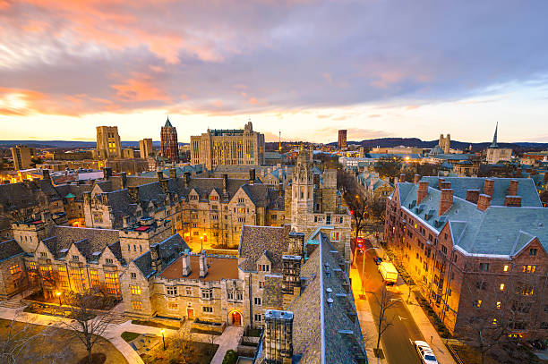
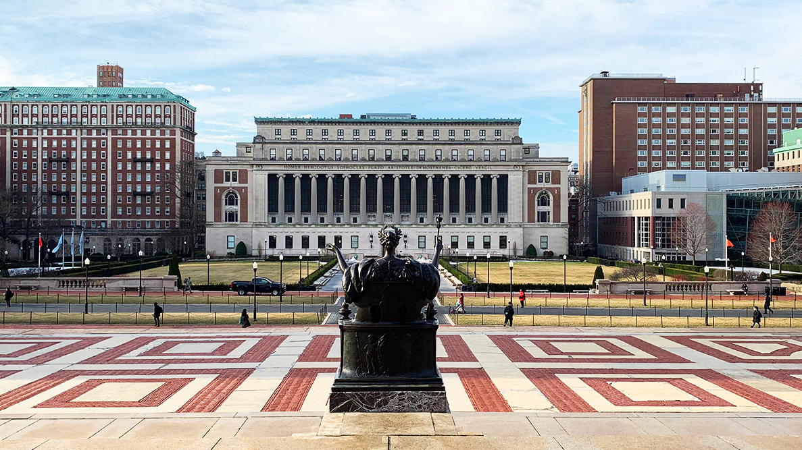

Princeton University
Princeton University, nestled in the heart of New Jersey has been consistently recognized as a world-class institution, securing the top spot in the US News Rankings for a remarkable decade.
Princeton University is unique in combining the strengths of a major research university with the qualities of an outstanding liberal arts college. Whether through independent study, student-initiated seminars, or lectures in emerging fields such as neuroscience, Princeton students have the flexibility to shape dynamic academic programs that prepare them for leadership and lives of service. Through its groundbreaking financial aid program, Princeton ensures that all qualified students who are accepted can afford to attend the University.
Princeton University is a private institution that was founded in 1746. It has a total undergraduate enrollment of 5,604 (fall 2022), its setting is suburban, and the campus size is 690 acres. It utilizes a semester-based academic calendar.
Its faculty are known throughout the world and it is not unusual for students to learn from Nobel laureates, Pulitzer Prize winners, and MacArthur fellows. Students benefit from small class sizes and one-on-one advising with faculty, particularly while doing independent work such as the senior thesis. All intellectual endeavors of Princeton's 5,150 degree-seeking undergraduate students are supported by a range of first-rate academic resources, such as libraries, laboratories, and even an art museum. The academic options at Princeton give students flexibility in pursuing their intellectual interests while working toward either the Bachelor of Arts or the Bachelor of Science in Engineering. Students also may choose from among 46 interdisciplinary programs, creating combinations of academic interests. For example, a student might major in physics while also earning a certificate in Latin American studies. The University is located in the town of Princeton, which has a diverse population of 30,000 residents and is situated between New York City and Philadelphia, with rail service to both cities. Princeton is a residential university that provides a welcoming environment, advising services, cultural and educational events, intramural sports, and more. As a residential community, Princeton provides housing for all four years. Princeton's six residential colleges offer settings where students quickly can become involved in campus activities. Students can participate in more than 250 student-run organizations, the arts, civic engagement, student government, religious groups, and athletics.

Harvard University
Harvard University is a private institution that was founded in 1636. It has a total undergraduate enrollment of 7,240 (fall 2022), and the campus size is 5,076 acres. It utilizes a semester-based academic calendar. Harvard University's ranking in the 2024 edition of Best Colleges is National Universities, #3.
Harvard is located in Cambridge, Massachusetts, just outside of Boston. Harvard’s extensive library system houses the oldest collection in the United States and the largest private collection in the world.
There is more to the school than endless stacks, though: Harvard’s athletic teams compete in the Ivy League, and every football season ends with "The Game," an annual matchup between storied rivals Harvard and Yale. At Harvard, on—campus residential housing is an integral part of student life. Freshmen live around the Harvard Yard at the center of campus, after which they are placed in one of 12 undergraduate houses for their remaining three years. Although they are no longer recognized by the university as official student groups, the eight all-male "final clubs" serve as social organizations for some undergraduate students; Harvard also has five female clubs.
In addition to the College, Harvard is comprised of 13 other schools and institutes, including the top-ranked Business School and Medical School and the highly ranked Graduate Education School, School of Engineering and Applied Sciences, Law School, and John F. Kennedy School of Government. Eight U.S. presidents graduated from Harvard College, including Franklin Delano Roosevelt and John F. Kennedy. Other notable alumni include Henry David Thoreau, Helen Keller, Yo-Yo Ma, and Tommy Lee Jones. In 1977, Harvard signed an agreement with sister institute Radcliffe College, uniting them in an educational partnership serving male and female students, although they did not officially merge until 1999. Harvard also has the largest endowment of any school in the world.

Massachusetts Institute of Technology
Massachusetts Institute of Technology is a private institution that was founded in 1861. It has a total undergraduate enrollment of 4,657 (fall 2022), its setting is urban, and the campus size is 168 acres. It utilizes a 4-1-4-based academic calendar. Massachusetts Institute of Technology's ranking in the 2024 edition of Best Colleges is National Universities, #2.
The essence of MIT is our appetite for problems-especially those big, intractable, complicated problems whose solutions make a permanent difference. While MIT is a research university committed to world-class inquiry in math, science, and engineering, MIT has equally distinguished programs in the architecture, the humanities, management, and the social sciences. A diverse, supportive campus environment-with an incredible range of student groups and athletic and fitness opportunities-ensures that it's not all about the work. And in MIT's intensely creative atmosphere, the arts flourish in all their forms.
MIT admits some of the most talented students in the world on a need-blind basis. The Institute is committed to meeting the financial need of each admitted undergraduate student through MIT scholarships; the average student scholarship was $31,926 per year in 2011. As a result, the MIT community is incredibly diverse, and organically collaborative, with students coming from many different backgrounds, across the country and around the world.
Students are frequently encouraged to unite MIT's engineering excellence with public service. For example, the required senior capstone design course for mechanical engineering majors centers on making the world a better place through engineering. Recent years have focused on projects using alternative forms of energy, and machines that could be used for sustainable agriculture. Beyond academic coursework, MIT's D-Lab, Poverty Action Lab, and Public Service Center all support students and professors in the research and implementation of culturally sensitive and environmentally responsible technologies and programs that alleviate poverty and improve quality of life in low-income areas locally, nationally, and worldwide.
The MIT community brings its energy and creativity outside the classroom as well with 400+ student-run groups, 33 varsity sports, 20 intramural sports, 30 club sports, and over 500 arts-related events on campus each year. Campus is just a short walk across the Charles River to Boston where students can enjoy the city's fabulous restaurants or take in Boston culture. Many programs around MIT allow students to get reduced-price tickets to various events, including the Boston Symphony Orchestra, the American Repertory Theater, and Bruins, Celtics, and Red Sox games. Students get free admission daily to the Museum of Science, the Museum of Fine Arts, and all Harvard University and MIT museums.

Stanford University
Stanford University is a private institution that was founded in 1885. It has a total undergraduate enrollment of 8,049 (fall 2022), its setting is suburban, and the campus size is 8,180 acres. It utilizes a quarter-based academic calendar. Stanford University's ranking in the 2024 edition of Best Colleges is National Universities, #3.
In 1885, Jane and Leland Stanford established Stanford University in memory of their son. Their intent was to establish a "University of high degree" that would "qualify students for personal success and direct usefulness in life and promote the public welfare by exercising an influence on behalf of humanity and civilization." Today, Stanford is a research university where teaching, learning and research are all integral to the university's mission. Stanford values close interaction between undergraduates and faculty. Student participation in research is strongly supported.
Stanford's entrepreneurial character draws from its Western location and the legacy of its founders. Academic excellence crosses disciplines, ranging from humanities to social sciences to engineering and the sciences. Stanford emphasizes multidisciplinary approaches to teaching and research and has established university-wide initiatives to address worldwide problems in human health, the environment, international affairs and K-12 education. Current faculty have 17 Nobels and 4 Pulitzers. Students, distinguished by initiative, love of learning and commitment to public service, are talented in many areas, including academics, art, music and athletics. Stanford's athletic teams, called the Cardinal, have won the Director's Cup as the best program nationwide 17 years in a row. Stanford's extraordinary campus is located in a dynamic and diverse area between San Francisco and San Jose in Northern California. The campus is considered among the most beautiful anywhere. The Bing Overseas Studies Program has offerings in 12 countries, and other Stanford programs take students to the Hopkins Marine Laboratory on Monterey Bay and to Washington D.C.

Yale University
Yale University is a private institution that was founded in 1701. It has a total undergraduate enrollment of 6,645 (fall 2022), its setting is city, and the campus size is 373 acres. It utilizes a semester-based academic calendar. Yale University's ranking in the 2024 edition of Best Colleges is National Universities, #5.
Yale is both a small college and a large research university. The College is surrounded by thirteen distinguished graduate and professional schools, and its students partake in the intellectual stimulation and excitement of a major international center of learning. The faculty is known for its special devotion to undergraduate teaching. Many of Yale's most distinguished senior professors teach introductory courses as well as advanced seminars to undergraduates. Faculty members are accessible to students and take a great deal of interest in working closely with undergraduates. Yale's curriculum allows students to achieve both breadth and specialization across several disciplines, including six engineering disciplines. In addition to probing a major field in depth, students are expected to explore three important areas of knowledge - the humanities and arts, social sciences, and natural sciences. While exploring several subject areas, students are also expected to sharpen their writing, quantitative, and foreign language skills.
Yale's unique residential college system organizes the student body into twelve small communities where students live, eat, socialize, and pursue academic and extracurricular activities. Before arriving as a freshman each student is randomly assigned to one of the colleges, giving students a built-in community from the moment they arrive. Most Yale students become convinced that their residential college is the best residential college. Each college is home to a microcosm of our undergraduate student body as a whole, and allows students to have the cohesiveness and intimacy of a small school while still enjoying the vibrancy and resources of a world-class university.
Yale students are actively involved in the New Haven community, benefiting from and enhancing the city's many cultural, recreational, and political opportunities. New Haven boasts diverse and abundant resources in the arts. There is a vibrant cultural and artistic life in the city, a myriad of opportunities both academic and social, and a remarkable choice of places to eat. New Haven is part of a Yale education: the experience of contemporary urban life broadens students' perspectives and helps prepare them for life after college.
Yale students have a long tradition of intense involvement with extracurricular activity. There are more than 450 active organizations on campus, ranging from the Undergraduate Math Society to the Yale Hunger and Homelessness Action Project, and including 50 performance groups and 60 cultural associations. This enormous range of opportunities endows Yale College with a palpable energy and spirit of commitment.
But perhaps the first thing that students notice about their college is the caliber of their fellow students. There are extraordinary artists, student government leaders, star athletes, passionate activists, award-winning poets, prize-winning scientists, and people who are just simply "well-rounded." Because Yale students come from such a wide range of ethnic, religious, cultural, geographic and socioeconomic backgrounds, there is a remarkable exchange of ideas. Yale is a major research university that focuses primarily on undergraduate education and encourages students to become leaders of their generation in whatever they wish to pursue.

University of Pennsylvania
University of Pennsylvania is a private institution that was founded in 1740. It has a total undergraduate enrollment of 9,760 (fall 2022), its setting is urban, and the campus size is 299 acres. It utilizes a semester-based academic calendar. University of Pennsylvania's ranking in the 2024 edition of Best Colleges is National Universities, #6.
Inspired by the intellectual audacity and educational ideals of our founder, Benjamin Franklin, the University of Pennsylvania (Penn) offers a compelling mixture of world-class liberal arts coursework and pre-professional education. Students apply to one of four undergraduate schools---Arts and Sciences, Nursing, Engineering and Applied Science, or Wharton. Penn also offers an array of exciting interdisciplinary programs and courses which leverage the resources of different departments or schools, such as the Fisher Program in Management and Technology, the Huntsman Program in International Studies and Business, and the Vagelos Program in Life Sciences and Management.
Students are strongly encouraged to engage the world beyond Penn, both locally and globally. Civic House provides a "hub" for students interested in all kinds of community service while the Center for Community Partnerships coordinates over 150 Academically Based Community Service courses each term which link theory and practice through activities that make a significant difference in West Philadelphia and the City. Opportunities for global engagement include Penn Abroad, through which more than 600 Penn undergraduates each year spend a semester or longer abroad, more than any other Ivy League school. Nearly 15% of our undergraduates come to Penn from other countries, providing a linguistically and culturally diverse environment.
As one of the world's premier research universities, Penn offers students the opportunity to learn by participating in the hands-on creation of new knowledge. The Center for Undergraduate Research, the Kelly Writers House, the Weiss Tech House, and the Penn Museum are places that connect undergraduates to leading researchers at Penn and to the cutting-edge ideas of its laboratories and seminar rooms. The academic experience at Penn is integrated with social and extra-curricular life. Almost all first-year students reside within the eleven College Houses at Penn, which link intellectual and social experiences through close contact with faculty-in-residence and student resident assistants. Penn has over 300 student groups ranging from political action to performing arts to sports clubs to student publications offering all students opportunities to pursue a wide-range of interests.
Such opportunities extend beyond campus to the City of Philadelphia where students can experience the rich cultural, athletic, social, and political life of America's most historic city. Today Ben Franklin would marvel at the intellectual and social excitement of the diverse and dynamic institution he founded.

California Institute of Technology
California Institute of Technology is a private institution that was founded in 1891. It has a total undergraduate enrollment of 982 (fall 2022), its setting is suburban, and the campus size is 124 acres. It utilizes a quarter-based academic calendar. California Institute of Technology's ranking in the 2024 edition of Best Colleges is National Universities, #7.
The California Institute of Technology (Caltech) is one of the world's leading science and technology research institutions. Our 300 faculty members, 1,200 graduate students, and 1,000 undergraduates expand human knowledge and advance society through bold, collaborative explorations and creative, intensive scholarship in fundamental and applied sciences, and engineering. "What makes Caltech unique," says President Jean-Lou Chameau, "is our focus-on education, on science and engineering, but most of all, on giving everyone at the Institute the means and flexibility to pursue his or her best ideas."
Caltech students are some of the brightest minds from around the world. Our students hail from 49 states and 62 different countries, and 98% of our students placed in the top tenth of their graduating classes. Though the admissions process is competitive--only 13% of applicants receive offers of acceptance--the Institute is committed to making a Caltech education accessible to all students. More than 50% of students receive need-based assistance, the average need-based financial aid package is worth nearly $35,000, and the average need-based scholarship totals more than $30,000.
The Institute operates advanced research facilities on its campus and oversees an international network of astronomical observatories, the seismological laboratory, and NASA's Jet Propulsion Laboratory (JPL). Caltech scientists have accelerated scientific discovery and launched new fields in molecular biology, geochemistry, and aerospace. Our faculty have earned 32 Nobel Prizes, 10 National Medals of Technology, 56 National Medals of Science, and 110 memberships in the National Academies. Through the Caltech Office of Technology Transfer, our faculty obtain nearly 140 patents annually, and our students and faculty have started more than 80 companies since 1995.
The Caltech campus is located in the city of Pasadena, just 10 miles from Los Angeles, with access to regional and commercial industrial centers, government agencies, and educational and cultural institutions. Student life at Caltech revolves around the eight campus Houses, which revel in their distinct personalities and unique traditions, including a long history of elaborate pranks carried off around the country. Caltech students can participate in more than 150 clubs that celebrate a wide range of interests or compete in 17 NCAA Division III-level varsity sports. The Honor Code governs life at Caltech, affording students such privileges as take-home tests, permission to collaborate on assignments, and keys to campus buildings.

Duke University
Duke University is a private institution that was founded in 1838. It has a total undergraduate enrollment of 6,640 (fall 2022), and the campus size is 8,693 acres. It utilizes a semester-based academic calendar. Duke University's ranking in the 2024 edition of Best Colleges is National Universities, #7.
Duke University offers a unique and compelling combination of academic achievement, engagement with society, and athletic accomplishment at the highest levels. A private comprehensive teaching and research university, Duke traces its roots to 1838, officially becoming Duke University in 1924. In addition to liberal arts and engineering education at the undergraduate level, Duke offers graduate and professional study in arts and sciences, business, divinity, engineering, the environment, law, public policy, medicine, and nursing. At the same time, Duke is an intimate setting, with 6,800 undergraduates and an additional 6,000 graduate and professional students.
Duke is a global university with students and faculty from nearly every country. We encourage students to go abroad to study, perform service and conduct research. About half of Duke's graduating class spends at least a semester in another country - one of the highest percentages of any of the nation's top private research universities. We offer instruction in 25 foreign languages. One of our most popular programs is DukeEngage, which supports undergraduates who want to pursue an immersive service experience in the U.S. or abroad.
Duke is characterized by innovation, entrepreneurship, energy and ambition. Duke students have an unusually wide range of opportunities available to them and freedom in choosing the academic path that best meets their needs. Duke students are encouraged to make a difference, to experiment with ideas and organizations and they are challenged to become engaged with society's problems and solutions.
Our students spend four years on one of the most beautiful campuses in America -- soaring Gothic buildings, modern teaching and research facilities, lush botanical gardens, and accessible athletics and recreational spaces. Duke's home of Durham is a historic tobacco and textile hub that has emerged as the heart of North Carolina's hi-tech Research Triangle, and is consistently recognized as one of the most desirable and vibrant places to live in the country. Durham's arts, culture, recreation and restaurants have earned a national following, and the region provides numerous opportunities for post-graduate employment.
Duke students exhibit legendary passion and enthusiasm. Duke's athletic program is regularly ranked among the nation's strongest and most competitive, with some of the country's most talented scholar-athletes and dedicated fans: the Cameron Crazies. A member of the Atlantic Coast Conference, Duke has thirteen men's varsity teams and thirteen women's varsity teams as well as numerous intramural, recreational, and club sports. Duke consistently leads the ACC in Academic Honor Roll students and is a top producer of Academic All Americans.
The residential experience is an important component of a Duke education. About 85 percent of all undergraduates live on campus. First-year students live together on East Campus, where about a quarter of them participate in FOCUS, a living/learning program organized around academic themes, which gives them immediate access to faculty mentoring and a smaller community of students they get to know well.
With the rigorous academics, the plethora of social and artistic activities, the immersive service and cultural opportunities and the occasional basketball game in Cameron Indoor Stadium, the most important things students need to bring with them to Duke are energy and intellectual curiosity.

Brown University
Brown University is a private institution that was founded in 1764. It has a total undergraduate enrollment of 7,639 (fall 2022), its setting is city, and the campus size is 146 acres. It utilizes a semester-based academic calendar. Brown University's ranking in the 2024 edition of Best Colleges is National Universities, #9.
Brown is the only major research university in the nation where undergraduates are the architects of their own course of study. The University's signature academic program for undergraduates encourages intellectual exploration and risk taking and fosters rigorous multidisciplinary study in more than 70 concentrations, ranging from Egyptology to Cognitive Neuroscience. Its School of Engineering prepares students for careers that will make a difference by seeking solutions to current problems that challenge our society.
Brown is frequently recognized for its global reach, many cultural events, numerous campus groups and activities, active community service programs, highly competitive athletics, and beautiful facilities located in a richly historic urban setting. Brown students are distinguished by their academic excellence, creativity, self-direction, leadership, and collaborative style of learning, while Brown's outstanding faculty is known for its singular dedication to teaching and research.

Johns Hopkins University
Johns Hopkins University is a private institution that was founded in 1876. It has a total undergraduate enrollment of 6,044 (fall 2022), its setting is urban, and the campus size is 140 acres. It utilizes a semester-based academic calendar. Johns Hopkins University's ranking in the 2024 edition of Best Colleges is National Universities, #9.
Johns Hopkins students are passionate about intellectual exploration; they are eager for life in a community of similarly passionate, equally ambitious scholars and teachers. This community is based at Homewood, a serene, tree-lined 140 acre campus next to the eclectic north Baltimore neighborhood of Charles Village. Here, students partner with their mentors to push the boundaries of knowledge. Johns Hopkins exposes these independent thinkers to new tools of analysis and new perspectives on the arts, humanities, social and natural sciences and engineering. At the same time, they engage with fellow students outside the classroom in intellectual, cultural, service and recreational pursuits that greatly enrich their education. When our students graduate, they join a global alumni body of men and women who use knowledge and experience acquired at Johns Hopkins to change the world.
Northwestern University
Northwestern University is a private institution that was founded in 1851. It has a total undergraduate enrollment of 8,659 (fall 2022), and the campus size is 231 acres. It utilizes a quarter-based academic calendar. Northwestern University's ranking in the 2024 edition of Best Colleges is National Universities, #9.
Northwestern University offers unusual flexibility combined with a wide choice of academic concentrations. In addition to over seventy established majors including top ranked engineering and journalism, students can choose or design non-traditional combinations. A broad range of field experiences, internships, and programs combining work and study are part of the education for a large percentage of the students. Because Chicago is only thirty minutes away, students have the cultural advantage of the music, theatre, museums, sports, and entertainment of a world-class city to enrich their undergraduate experience.
Columbia University
Columbia University is a private institution that was founded in 1754. It has a total undergraduate enrollment of 8,832 (fall 2022), and the campus size is 36 acres. It utilizes a semester-based academic calendar. Columbia University's ranking in the 2024 edition of Best Colleges is National Universities, #12.
Founded in 1754, Columbia University in the City of New York encompasses more than a dozen graduate and professional schools and the over 5,800 undergraduates studying in Columbia College and The Fu Foundation School of Engineering and Applied Science. The renowned Core Curriculum unites all Columbia undergraduates by providing a common foundation in literature, philosophy, science, art, history and music, and caps classes at 22 students to afford close interaction with Columbia's renowned faculty.
Columbia Engineering is one of the oldest engineering schools in the U.S., and unique in its educational approach which includes a guaranteed first-year hands-on design course; close student-to-faculty interaction with extensive undergraduate research opportunities; a broad-based core curriculum, liberal arts minors and interdisciplinary courses; and innovative internship and civic engagement programs in New York City and around the world. Students choose among over 100 majors and concentrations and thousands of research, internship and job opportunities.
Located in the Morningside Heights neighborhood of Manhattan, Columbia not only offers access to all of New York City, the ultimate classroom, but also guaranteed four-year housing within a traditional campus surrounded by a residential neighborhood lined with bookstores, cafes and parks. Called "the quintessential great urban university," Columbia is diverse in every way: students come from 50 states and over 90 foreign countries; over half of undergraduates are students of color, and over 500 student organizations are offered, including 31 Division I Ivy League athletic teams and dozens of community service organizations, performance groups, political clubs and publications.
As the birthplace of FM radio, the fields of genetics and anthropology, the nation's oldest literary magazine and first Black student advocacy group on a multi-racial campus, Columbia has carried on a tradition of both social and scientific innovation for over 250 years. Notable Columbians include Barack Obama, Isaac Asimov, Madeline Albright, Langston Hughes, Jack Kerouac, Julia Stiles, and many more spanning every professional field.
Columbia offers extensive need-based financial aid and meets the full need of every student admitted as a first-year with grants instead of loans. Parents with calculated incomes below $60,000 and with typical assets are not expected to contribute any income or assets to tuition, room, board and mandatory fees and families with calculated incomes between $60,000 and $100,000 and with typical assets have a significantly reduced contribution. To support students pursuing study abroad, research, internships and community service opportunities, Columbia offers the opportunity to apply for additional funding and exemptions from academic year and summer work expectations. A commitment to diversity of every kind is a longstanding Columbia hallmark. We believe cost should not be a barrier to pursuing your educational dreams.

Cornell University
Cornell University is a private institution that was founded in 1865. It has a total undergraduate enrollment of 15,735 (fall 2022), its setting is rural, and the campus size is 745 acres. It utilizes a semester-based academic calendar. Cornell University's ranking in the 2024 edition of Best Colleges is National Universities, #12.
Cornell University was founded in 1865 as a coeducational, nonsectarian institution where "any person can find instruction in any study." Once dubbed "the first American university" in recognition of the revolutionary principles on which it was founded, Cornell continues to push the limits of its founder's vision. Renowned for its distinctive mix of eminent scholarship, academic rigor and commitment to public service, it attracts more than 20,000 students from every state in the Union and over 120 countries. They learn from a world-class faculty teaching more than 5,000 courses and participate in cutting-edge research in 11 undergraduate, graduate and professional schools on the uniquely beautiful Ithaca campus, at Cornell's medical college campuses in New York City and Qatar, and in affiliated programs around the world.
The breadth of study, ranging from legendary programs in the humanities to world-class interdisciplinary research centers in nanotechnology, biotechnology, supercomputing and genomics, sets Cornell apart from its Ivy League peers. The land-grant university of New York State, Cornell also boasts the nation's first colleges devoted to hotel administration, industrial and labor relations, and veterinary medicine. In recent years, Cornell has been aggressively expanding its international programs - from the establishment, in 2001, of the Weill Cornell Medical College in Qatar, the first American medical school outside of the United States, to the forging of partnerships and collaborations with major institutions in China, India, and Singapore - further supporting Cornell's status as the transnational university of the future.
University of Chicago is a private institution that was founded in 1890. It has a total undergraduate enrollment of 7,470 (fall 2022), its setting is urban, and the campus size is 217 acres. It utilizes a quarter-based academic calendar. University of Chicago's ranking in the 2024 edition of Best Colleges is National Universities, #12.
The University of Chicago is universally recognized for its devotion to open and rigorous inquiry. The strength of our intellectual traditions, intense critical analysis, free and lively debate, creative solutions to complex problems rests on the scholars who continue to engage them. Our College graduates have made discoveries in every field of academic study; they are ambitious thinkers who are unafraid to take on the most pressing questions of our time. Their accomplishments have helped establish the University's legacy as one of the world's finest academic institutions.
The University of Chicago has been home to over 85 Nobel Prize-winners, over 200 Guggenheim fellows, 30 Macarthur "genius" fellows, and 20 Pulitzer Prize-winners. And with over 140 research centers and institutes; numerous world-class theaters, museums, and art centers; and three of the nation's top professional schools in law, business, and medicine all within blocks of one another on our campus, UChicago is renowned for the unparalleled resources it provides its undergraduate students.
Rooted in Hyde Park, a neighborhood home to both our 215-acre campus, certified as a botanical garden, and about 60% of the private homes of our faculty, UChicago offers a true campus-based community within the context of a major American city. Our students engage the city of Chicago and its many neighborhoods through groundbreaking research and scholarship, unparalleled internship opportunities, and a commitment to community service. Just as Chicago is a global city, the University of Chicago remains a truly international university, offering faculty-led study abroad programs all across the globe as well as in conjunction with our centers in Beijing, London, Paris, and Singapore.
UChicago maintains a student-faculty ratio of 6:1, ensuring that every classroom experience exemplifies our commitment to a student's ability to interact closely with our faculty. Our famous Core curriculum provides students with a common vocabulary and a well-balanced academic experience, while allowing them the flexibility to explore their own particular interests in small discussion-style seminars. Students also enjoy a highly successful Division III sports program, small but active Greek life, forty student theatrical productions a year, a rich music scene, celebrations of different cultures and communities, and the extraordinary opportunities in politics, music, theater, commerce, architecture, and neighborhood life in the city of Chicago.

Rice University
Rice University is a private institution that was founded in 1912. It has a total undergraduate enrollment of 4,494 (fall 2022), its setting is urban, and the campus size is 300 acres. It utilizes a semester-based academic calendar. Rice University's ranking in the 2024 edition of Best Colleges is National Universities, #17.
Undergraduate education has remained at the center of Rice University's mission since its founding nearly 100 years ago. Our students have unparalleled opportunities to learn from distinguished faculty through classroom interaction and research collaboration. Rice combines the advantages of a liberal arts college, including small class sizes and a low faculty to student ratio, with the resources and facilities of a premier research university. The distinctive residential college system enhances the Rice experience by allowing students to flourish as individuals in a community of their peers.
Rice's comparative advantages lie in our relatively small size, our emphasis on undergraduate education, our focused areas of strength, the relative ease by which we can foster interdisciplinary study, and our possibilities for teaching and research excellence across the range of human knowledge and endeavor. Rice boasts a just a 6:1 student-faculty ratio, a median class size of 13, an endowment of $4.45 billion, numerous opportunities for undergraduates to conduct primary research, and a strong sense of community fostered by our residential college system. Rice practices need-blind admission, meets 100 percent of students' demonstrated need, and is consistently heralded as one of the best values in higher education.
Dartmouth College
Dartmouth College is a private institution that was founded in 1769. It has a total undergraduate enrollment of 4,458 (fall 2022), its setting is rural, and the campus size is 237 acres. It utilizes a quarter-based academic calendar. Dartmouth College's ranking in the 2024 edition of Best Colleges is National Universities, #18.
Founded in 1769, Dartmouth is one of the oldest and most respected institutions of higher learning in the United States. A member of the Ivy League, Dartmouth has a long history of dedication to the highest educational ideals. With its world-class faculty and facilities, and nationally and internationally renowned graduate programs in engineering, business, medicine and the arts & sciences, the school has resources that very few universities can match. In addition, by maintaining a highly flexible quarter-system calendar, and allowing only faculty to teach its undergraduate courses, Dartmouth assures that students have complete and timely access to all that the institution has to offer.
Faculty: The professors at Dartmouth are among the leaders in their fields, yet they remain fully committed to teaching. Even the most senior professors teach first-year courses. Recipients of more than $202 million in annual research grants and consistently ranked among the most respected teachers in American higher education, Dartmouth professors are true exemplars of the phrase teacher-scholar. Through course-related discussions, research collaborations, and casual conversation, students get to know their professors as instructors, mentors, colleagues, and friends.
Undergraduate Students: Dartmouth students come from 47 states and more than 91 countries. The population is divided almost evenly between men and women. More than a third of the students identify themselves as students of color (36%) or non-US citizens (7%). Over half of the students receive some form of need-based financial assistance to cover the cost of their education. Dartmouth disburses more than $88 million in need-based aid each year. Prior to Dartmouth, 54% of the students attended public secondary schools and 46% attended private or parochial schools. Once on campus, they take full advantage of the academic resources Dartmouth has to offer, and get involved in the more than 300 officially recognized organizations.
Vanderbilt Universty
Vanderbilt University is a private institution that was founded in 1873. It has a total undergraduate enrollment of 7,151 (fall 2022), its setting is urban, and the campus size is 333 acres. It utilizes a semester-based academic calendar. Vanderbilt University's ranking in the 2024 edition of Best Colleges is National Universities, #18.
Comprised of four undergraduate schools and six graduate programs, Vanderbilt University offers students a world-class liberal arts education that includes both a high level of intellectual engagement and myriad extracurricular and research opportunities. Vanderbilt students -- who hail from across the country and the world -- speak often about maintaining an excellent balance between academic challenge and campus involvement. With 350+ student-led organizations, mirroring the diverse array of opinions and backgrounds represented at Vanderbilt, campus is always buzzing with activity. From Greek life to religious organizations and everything in between, there is never a shortage of opportunities to get involved.
Designed to foster a sense of community for first-year students making the transition to college, The Martha Rivers Ingram Commons offers a living-learning residential experience, and has often been cited as a key source of friendship and camaraderie among our students, who keep in touch well after that crucial freshman year. Seven of The Ingram Commons buildings have been LEED (Leadership in Energy and Environmental Design) certified, making it one of the largest collections of LEED-certified buildings planned on a single campus in the Southeastern United States. Moreover, Vanderbilt Visions enhances The Ingram Commons by facilitating conversations about the college experience among first-year students, peer mentors, and faculty advisers.
Vanderbilt's study abroad program offers more than 100 direct-credit programs in Argentina, Australia, Austria, Chile, China, Costa Rica, the Czech Republic, Denmark, the Dominican Republic, Egypt, England, France, Germany, Israel, Italy, Japan, Russia, Singapore, South Africa, and Spain, among others. Service is also important to Vanderbilt students, who engage with the local and global community through a large number of volunteer programs and organizations such as Alternative Spring Break, which was founded at Vanderbilt and has since become a staple at many other universities.
Well-known speakers and musical acts always draw a crowd on campus through the popular Rites of Spring festival, which takes place on Alumni Lawn, as well as IMPACT, Commodore Quake and other events conceived of and executed almost entirely by students. Indeed, Vanderbilt's location in Midtown Nashville, in the heart of Music City, provides something for everyone: a rich supply of music from every conceivable genre, and an abundance of restaurants, theaters, shops, museums, and coffee shops, all within walking distance of campus. Outside Nashville, the state of Tennessee is home to the Great Smoky Mountains and state parks featuring beautiful lakes and prime hiking trails.
Regarding financial aid, Vanderbilt practices a need-blind policy for all U.S. citizens and eligible non-citizens, and promises to meet 100% of demonstrated need for all admitted students. Students' need-based aid includes a combination of grant monies and federal work-study funding and does not include loans. Additionally, the university offers merit aid to approximately 3% of applying students. The three signature merit programs -- the Ingram Scholarship Program, Cornelius Vanderbilt Scholarship Program, and Chancellor's Scholarship Program -- require a separate application and each award includes full tuition plus a summer stipend.

University of Notre Dame
University of Notre Dame is a private institution that was founded in 1842. It has a total undergraduate enrollment of 8,971 (fall 2022), its setting is suburban, and the campus size is 1,265 acres. It utilizes a semester-based academic calendar. University of Notre Dame's ranking in the 2024 edition of Best Colleges is National Universities, #20.
Notre Dame offers undergraduate students an educational experience that is second to none in quality and, at the same time, distinctly Catholic. Faith informs learning at Notre Dame, and the University's students are urged to turn their learning to the service of others. The community life of the highly residential campus is distinctive, but Notre Dame also ranks sixth in the percentage of its students who study abroad. Its graduation rate is among the top 5 in the country and its alumni are celebrated for their loyalty.

Emory Uiversity
Emory University is a private institution that was founded in 1836. It has a total undergraduate enrollment of 7,101 (fall 2022), and the campus size is 631 acres. It utilizes a semester-based academic calendar. Emory University's ranking in the 2024 edition of Best Colleges is National Universities, #24.
Emory University is known for demanding academics, outstanding undergraduate education in the arts and sciences, highly ranked professional schools and state-of-the-art research facilities. Emory encourages students to create their own experiences. Top faculty are accessible and committed to teaching and fostering undergraduate research in the sciences and humanities.
At Emory, students have four options for their undergraduate education. Entering freshmen can apply to Emory College, which offers a liberal arts education within the heart of a major research university. Students also can apply to Oxford College where students spend the first two years on Emory's original campus 38 miles east of Atlanta. Oxford offers a small-college setting with the same academic strengths, innovative teaching and unique opportunities for leadership. As juniors, students continue from Oxford to the Atlanta campus. As juniors, students can choose from more than 70 majors in Emory College. They can also apply to the renowned Goizueta Business School to earn a bachelor of business administration. Students who aspire to a nursing career can earn their degree at the Nell Hodgson Woodruff School of Nursing, one of the nation's top private nursing schools.
Washington University in St. Louis
Washington University in St. Louis is a private institution that was founded in 1853. It has a total undergraduate enrollment of 8,132 (fall 2022), its setting is city, and the campus size is 169 acres. It utilizes a semester-based academic calendar. Washington University in St. Louis' ranking in the 2024 edition of Best Colleges is National Universities, #24.
Washington University in St. Louis is a research university that offers a unique environment for undergraduate students to learn and grow. Unparalleled curriculum flexibility and learning opportunities in a friendly and supportive community inspire undergraduates to explore their interests and develop new ones. Working with their advisors, undergraduates may choose a traditional single major, as many do. Others combine majors with minors, second majors, and pre-professional programs -- all within their four-year undergraduate experience. We encourage our students to participate in internships, study abroad programs, research and scholarship, and over 300 clubs and organizations, rounding out Washington University's commitment to help each student identify and pursue his or her passion. Our students pursue their passions every day.

New York University in Abu Dhabi
As a liberal arts college and research university, NYU Abu Dhabi offers 22 majors in the area of Arts and Humanities, Social Science, Science, Engineering and Mathematics. Undergraduate students graduate with a Bachelor of Science or Bachelor of Arts degree. As a prerequisite for graduation, students are required to take courses from the core curriculum, which encompasses topics in world literature, social studies, arts, and natural science. Over their college years, undergraduates take four 3-week courses in January that count toward their graduation requirement. Students' education also includes a capstone project in their senior year, a project similar to a senior thesis. Additionally, students are encouraged to study up to two semesters at New York University's Global Network sites in Accra, Berlin, Buenos Aires, Florence, London, Madrid, Paris, Prague, and Shanghai.
Tufts University
Located seven miles outside Boston, Tufts is a university of 10,000 students that uses the intellectual framework of the liberal arts and engineering to serve the common good. Globalism, active citizenship and environmentalism are multidisciplinary themes that link over 60 academic programs in the School of Arts & Sciences and the School of Engineering, the University's two undergraduate programs. With a 9:1 student-faculty ratio and an average class size of 20, the undergraduate curriculum at Tufts is writing and discussion-intensive. Tufts prepares leaders who will address the great intellectual and social challenges of the new century, people who want to interpret new information and make a difference in people's lives.
An emphasis on critical reasoning, a creative approach to problem-solving, and emotional and social intelligence enables students to question, appreciate, and understand information and trends in a fast-paced, multicultural environment. Tufts offers rigorous, cutting-edge programs in fields as diverse as international relations, biomedical engineering, community health, environmental studies, neuroscience and cognitive studies, to name a few. Liberal arts candidates gain broad academic proficiency as well as proficiency in second language while engineers are trained to be technically-skilled as well as highly literate as they examine the societal impact of technology.
Williams College
Talented, highly motivated students and faculty from across the country and abroad gather in the natural beauty of Williamstown to create a community of learning that is both personal and powerful. Personal are the bonds that grow among faculty and students - in the classroom, lab, theater, and studio and through an endless array of extracurricular activities. Powerful are the learning that results, the impact Williams students go on to have on the world, and the strength of their lifelong attachment to each other and to the place.
Amherst College
Amherst College is widely regarded as one of the nation's very best liberal arts colleges. Enrolling 1,770 students from nearly every state and more than 40 countries, Amherst features an open curriculum and offers the BA in 33 fields of study. Amherst is part of the Five College Consortium with Smith College, Hampshire College, Mount Holyoke College and the University of Massachusetts at Amherst.
Pomona College
Pomona offers its 1,500 students-evenly divided between men and women-a comprehensive curriculum in the arts, humanities, social sciences and natural sciences. With a student-faculty ratio of eight to one, students have the opportunity to work closely and collaboratively with professors who are also top scholars in their fields. Students and faculty challenge each other in laboratories, classrooms, and co-curricular activities, and everyone benefits from the energy generated by such an assemblage of sharp and eager minds. Friendships forged among Pomona faculty and students frequently endure far beyond the four years of college.
Few institutions offer Pomona's ability to combine intimate qualities as an average class size of 14 with such large-scale resources as a two-million-volume library. Fewer have enrolled as talented and high achieving a student body which is as happy with their environment and choice. As the founding member of The Claremont Colleges, a unique consortium of seven independent institutions on adjoining campuses, Pomona offers its students the experience of a small, academically superb liberal arts college and the breadth of academic and social resources normally associated with major universities.
Swarthmore College
Swarthmore College, a highly selective college of liberal arts and engineering, celebrates the life of the mind. Since its founding in 1864, Swarthmore has given students the knowledge, insight, skills, and experience to become leaders for the common good. The College is private, yet open to all regardless of financial need; and decidedly global in outlook, drawing students from around the world and all 50 states. So much of what Swarthmore stands for, from its commitment to curricular breadth and rigor to its demonstrated interest in facilitating discovery and fostering social responsibility, lies in the quality and passion of its faculty.
A student/faculty ratio of 8:1 ensures that students have close, meaningful engagement with their professors, preparing them to translate the skills and understanding gained at Swarthmore into the mark they want to make on the world. The College's Honors program features small groups of dedicated and accomplished students working closely with faculty; an emphasis on independent learning; students entering into a dialogue with peers and teachers; and an examination at the end of two years study by outside scholars. Swarthmore's idyllic, 425-acre arboretum campus features rolling lawns, a creek, wooded hills, and hiking trails, and is located just 11 miles from Philadelphia.
Wellesley College
Wellesley College, one of the most academically challenging institutions of higher education in the country and widely acknowledged as the nation's top women's college, provides its 2,300 students with an array of opportunities that create the richest possible educational environment. Wellesley prepares women to realize their own highest ambitions and compete in any setting. Offering more than 1,000 courses in 54 established majors, the College also supports more than 100 student clubs and organizations (as well as 14 varsity teams) that serve a wide range of interests. It is this broad-based educational and experiential excellence along with its dedicated faculty, small class size (averaging 17-20, with a student/faculty ratio of 8:1), and strong sense of community--that distinguishes Wellesley.
Twenty-one residence halls house from 140 to 285 students from all four classes and from 84 countries and 48 states, making Wellesley one of the most diverse colleges in the nation. Celebrated for the many extraordinary facilities on its beautiful 500-acre campus, Wellesley is home to the Lulu Chow Wang Campus Center; the Science Center; the Knapp Media & Technology Center; the Margaret Clapp Library; the Davis Museum & Collins Cinema; the Keohane Sports Center; the Hunnewell Arboretum & Alexandra Botanic Garden and Ferguson Greenhouses; the Jewett Arts Center; the Nehoiden Golf Course; the Newhouse Center for the Humanities; the Pforzheimer Learning and Teaching Center; the Slater International Center; the Wellesley Centers for Women; the Whitin Observatory; the Wellesley College Theatre; and the Albright Institute for Global Affairs, which educates women for leadership in the world. Alumnae commitment to the College and its mission is renown , and the connections among the 32,000 active alums' including U.S. Secretary of State Hillary Rodham Clinton '69, former Secretary of State Madeleine Albright '59, ABC News anchor Diane Sawyer '67, and former Space Shuttle Commander Pamela Melroy '83--are strong. Wellesley is just outside of Boston, a city rich in theatre, art, sports, and entertainment...and populated with tens of thousands of college students.